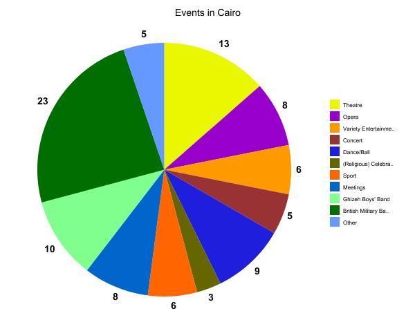
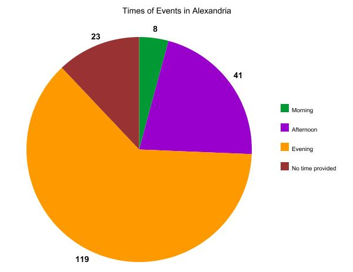
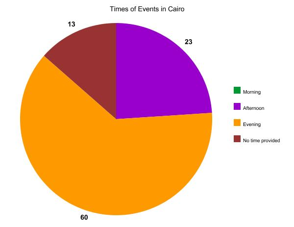

Cultural Significance of Events in Alexandria
I am researching the most common events publicly hosted in Alexandria, and possibly Cairo for comparison, and what this could possibly mean about the culture of the people. In order to do so, I needed to find every list of events in the paper. In order to find these, I began with my own issues of the paper, knowing I had labeled everything of this sort with “scope=’calendar’” so all I had to do was use the regular search function and find all of these. Once I had done so, I took note of what each of these segments were called; it seemed there were only the “Calendar of Events,” “Coptic Calendar/Weekly Calendar,” and “Seasonal Fixtures.” Knowing that the Coptic calendar had nothing to do with the information I was looking for, I elected to ignore it in my search. Therefore, I began searching every issue for the term “calendar” and the string “seasonal fixtures.” I had to do so manually, flipping through every issue and using the less powerful search function, because my xpath is malfunctioning for some reason and won’t return any results, even when I search for strings that I know exist at least within my own issues of the paper. Also, there were too many flags on some issues to attempt to resolve them so I could get information from those issues of the paper via the xpath query. Regardless, I carried out my search and found the issues of the paper containing calendars and lists of events.
However, there is almost no information regarding calendars until May in the paper, and some months (such as June) have very few entries that I could find. Thus, my knowledge of the most common events in Alexandria and/or Cairo in 1905 is hindered by that, and I can only draw conclusions based on the time frames I have information for. I cannot draw any conclusions or make assumptions about the beginning of the year, but my data is probably fairly sound from July through December despite the missing weeks not transcribed this semester. I decided not to consider events in January of 1906 as they don’t specifically pertain to my question. Another problem I ran into quite often was typos in the calendars, since it’s easy for the OCR to identify numbers incorrectly. The solution to this problem was very simple, actually: the calendars of 1905 and 2017 occur on the same days, so I could reference next year’s calendar for accuracy of the dates.
Once I had all of my information, I began to construct a master calendar, so I wouldn’t accidentally count the same event twice in my research. I also categorized the events instead of writing each individually and I categorized the times of events instead of writing every time down. The groups of events are: opera, concert, theatre (any production made by a theatre company which does not fit into the former two categories), variety entertainment (some events were labelled this, others were one-time events which fell into the category of entertainment such as a circus or a horse race), dances and balls, religious celebrations or secular celebrations (this category includes festivals and church services), sport events (I will discuss this category more in length later), meetings (I will also discuss this category more in length later), Ghizeh Boys’ Band (this event only occurs in the Cairo calendar, not in the Alexandria calendar), and the British Military Band (this event also only occurs in the Cairo calendar, not in the Alexandria calendar; beyond that, this is another account I shall discuss at greater length later).
One thing I noticed about the other calendar, the Coptic and Mahomedan Weekly Calendar, is that it only began to occur in the second half of the year. Prior to that, there was a weekly calendar, but never a Coptic Calendar. However, beginning in July, there was a Coptic Calendar published almost as often as the weekly calendar- 40 instances of the Coptic Calendar and 44 instances of the weekly calendar in the months of July through December. 16 of those Coptic Calendars occur in issues which have no weekly calendar and 20 weekly calendars occur in issues with no Coptic Calendars. Some issues will even end up containing two Coptic Calendars. I did not find any sort of pattern in the Coptic Calendars or even in the weekly calendars, but that may have something to do with the many missing and incomplete issues of the paper.

Moving on to the results of the analysis of the Master Calendar, it appears that the most common event in Alexandria was meetings with 22% of the events I found. The majority of these meetings were for the Rifle Club and another notable group was the Yacht Club which met quite a few times. Just below that were sports (16%), concerts (15%), and dances/balls (13%). The most notable of the sports were the numerous football matches that occurred in the city, between various different groups- most often business groups. Of the concerts, I had to remove quite a few entries once I noticed a pattern, there were 3 different hotels doing daily concerts which means technically the most common event was concerts, by far, but I wanted to see what was beyond those daily events which would skew the numbers. I had to do the same for theatre performances in the Cairo calendar. The most common dance/ ball in Alexandria was the Family Reunion which only began to occur later in the year, but then occurred many times before the year was out. From this, I believe we can gather that the most important event cultural aspects in Alexandria 1905 were probably clubs and groups or possibly businesses as well as music, with sports and social gatherings right behind them. I find this group mentality interesting, considering Alexandria was quite the melting pot, but the high number of business meetings makes sense as it was a business hub at the time. The commonality of sports is another interesting discovery, because while sports are very common in foreign countries, especially football, I wasn’t aware they were so important in Egypt. Though, this may be a result of the increased number of foreigners in the area. I also thought perhaps the focus on business would decrease sports in the area, but they are simply played by union groups and workers instead of students. I noticed that the results of the games also tended to take up a significant portion of the articles of the paper, though that is of course not part of the question at hand. Beyond that, music and social events have always been very popular, especially in the past.

As for Cairo, the most common event was the performance of the British Military Band (24%), which suddenly cut out in early October and was replaced by an “Infantry Band” which I believe may have been simply a name change, as they occurred in the same place as the Military band, but I did not include the number of Infantry performances in the Military performances. Aside from that, there were many theatre performances in excess of the ones occurring daily.
Knowing this, it appears that the most important cultural aspects of Cairo were music as well, but specifically the British Military band, which points back at the heavy hand of the Europeans in African affairs during that time. However, if we consider the three daily productions which I omitted from the data, then the theatre was of the most important cultural aspects of Cairo at the time. It also must be considered that these are the events in Cairo as published by a newspaper in Alexandria, so this probably less of an analysis of the important cultural aspects of Cairo and more of an analysis of what Alexandrians used Cairo for. Therefore, it’s possible that theatre is not the most common event in Cairo, but simply the most common reason for people from Alexandria to travel to Cairo which means that theatre was an important cultural component of Alexandria, but for some reason there weren’t nearly as many performances in Alexandria as there were in Cairo so the Alexandrians had to travel to enjoy variety in performances. I also looked into the times of the events in Alexandria and Cairo, wondering if there might be a pattern there. I grouped the times into three categories; the first being morning which I defined as until 11a.m., the next was afternoon which spans from the end of morning to 4 p.m., evening which began at the end of afternoon, and the final group being events which had no time provided.


By a very wide margin, evenings were the most common—Cairo didn’t have any events occurring before 11 a.m. and Alexandria had only a handful—taking up a grand total of 63% of events in both cities. Most events seemed to occur after 8 p.m., especially the concerts, dances, balls, operas, and theatre performances. Few began before 8 p.m., with almost none of them beginning before 6 p.m. This insinuates a heavy night-life of both cities. The main exception to these were sporting events which almost always took place during the afternoon unless it was swimming, and the Ghizeh Boys’ Band which always performed in the afternoon.
Samantha Lappin
Student
The author, a student at Florida State University, was enrolled in the digital microhistory lab in fall 2016.